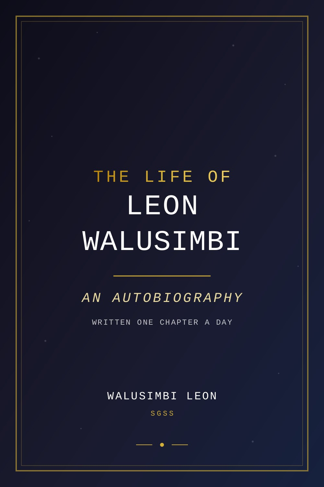

By Walusimbi Leon (SGSS)
I still remember the smell of the cyber café. It was a small room at the end of a dusty lane in Kampala, with six or seven bulky CRT monitors that hummed like they were alive, and the electric fan that did nothing but push warm air around. The price was cheap — a few hundred shillings for thirty minutes — but the real cost was your patience, because the connection would drop, the machines would freeze, and the owner would shout at you if you touched the mouse while the page was loading.
I was maybe eleven or twelve, short for my age, and I had no business being in there. But I’d saved up pocket money, and I lied to my mother about going to a friend's house. I just wanted to see the Internet. I'd heard about it from an older cousin who said you could find anything on it, talk to people in other countries, watch videos. He said it was like a library that had no walls.
The first thing I did was type something into the search bar. I don’t remember what. Probably something silly, like "free games". But the page that came back was covered in blue links and small images, and it felt like the whole world had been folded into that glowing rectangle. I didn't know then that I was going to spend the rest of my life on the other side of that rectangle — building what other people would search for.
That day, I found a site that let you create your own webpage. It was a free service, Geocities or something like that, with a ready-made template and a little address bar where you typed your text and it appeared on the page. I made a page about my favorite football team, added a flashing "Welcome" gif, and hit save. When I clicked the link and it loaded a page with my words on it — live, viewable, mine — I felt something shift in my chest. It wasn't excitement exactly. It was more like recognition. Like I’d found the thing I was supposed to do.
I had no computer at home. My family had a single phone, a Nokia with a cracked screen, and the Internet was something you went to. So I started going to the café every weekend, sometimes skipping lunch so I could afford an extra hour. The man at the desk, a guy with a beard and a tired face, got used to me. He let me stay a little longer after closing if I helped him update the shop's Facebook page. I didn't mind. I was learning something every time.
I learned HTML by right-clicking any page and selecting "View Source". That was the trick — every website was just text behind the pretty graphics. I'd copy the code into a notebook, take it home, study it under the kerosene lamp when the power went out, and try to understand how the pieces fit together. At the café, I’d test my experiments. The other people in the room were there for chat, for news, for games. I was there to build. I remember the first time I made a table that didn't fall apart, and a navigation bar that actually linked to another page. It wasn't pretty. It was blocky and ugly and the colors were wrong. But it worked. And that was enough.
The first website I ever built was for a friend’s small business — a shop that sold woven baskets. The friend paid me in soda and roasted groundnuts. It was a single page with some images I'd copied from other sites, a white background, and a few lines of text written in broken English. But when it went live — after I'd copied the files to a free hosting service — I felt like a millionaire. I refreshed the page five times just to watch it load. I called my friend and told him his shop was now online. He didn't really understand what that meant. To be honest, neither did I. But I knew it was important.
That same week, I wrote my first piece of JavaScript. A little script that changed the background color when you clicked a button. I didn't know what "event listener" meant. I just copied a snippet from a forum and adjusted the colors. It was magic. I had no idea that the script could be potentially harmful, too. For me, it was just a door opening.
Of course, I also learned what could go wrong. I remember the day I accidentally deleted the entire contents of a shared hosting folder. I was trying to move a file and pressed the wrong thing. There was no undo. I stared at the empty folder for ten minutes, then called the web hosting customer support. The support person was somewhere far away, probably in India or the Philippines, and she sounded like she had heard the same story a thousand times. She restored my backup. I never forgot the lesson: always keep backups. It's the kind of rule you earn, not read.
I started to keep a list of things I wanted to build. A calculator. A quiz game. A blog. A music player. Some of those stayed on the list for years. Some I built and then took down because they were embarrassingly bad. But every one taught me something.
Later, I found out about open source. The idea that people all over the world were writing code and sharing it, for free, for anyone to use, amazed me. I read about Linux and Git and GitHub, and I understood that the Internet wasn't just a library — it was a workshop. A place where you could build things together, even with people you'd never meet. I opened my first GitHub account—I was too young, but I lied about my age. I made a repository for my practice projects, and nobody gave me permission. I just did it. That's the kind of permission that matters. I started to see that the whole Internet was built by people who refused to wait for permission. They just built it. I wanted to be one of them.
There was a moment, years later, when I was working on my own portfolio of websites — YouAudiobooks, YouSongs, YouBooks, the Git Dashboard — that I looked at the code and realized I had come a long way. And yet the thrill was the same: hitting publish, watching the page load, knowing that the world could see it. The first website was the seed. Everything else grew from that.
People ask me where I started. I tell them: a cyber café in Kampala, with a humming CRT screen and a shaky connection, two thousand shillings in my pocket, and a notebook full of copied HTML. That's the honest answer. There was no grand plan. There was just curiosity — a stubborn, hungry curiosity that refused to be satisfied with the front-end of the web. I wanted to know how things worked on the inside. And I never lost that.
Even now, when I write a book or deploy a game to a server, I still feel that same beginning. The material changes. The tools change. But the act is the same: I look at something empty, I type, I click save, and I watch it come alive. That first website taught me that anything is possible if you're willing to sit in front of a machine and learn.
Some people ask if I regret those early days — not having a computer at home, not having an offline mentor, not having money. I don't. Because I learned to solve problems from scratch. I learned to be patient with broken things. I learned that the Internet is not a place you visit; it's a place you build.
And I built. That's what I keep doing.
The first book started on a night when nothing else was working.
I had spent hours trying to fix a client's website. The layout kept breaking on mobile. The images refused to load. The hosting server was having one of its moods. I closed my laptop near two in the morning, and the silence of the house pressed in on me. Rain was falling on the roof, the way it does in Kampala when the night decides it is not done with you yet. I sat in the dark, tired of fighting machines, tired of making things that belonged to other people.
And then, for no reason I can explain, I opened the laptop again. I opened a blank document. I typed a sentence.
It wasn't code. It was a thought. Something I had been carrying for weeks without knowing it. A line about a person standing at a crossroads, looking back at a life they almost lived.
I stared at that sentence for a long time. Then I typed another one.
By the time the sky turned grey, I had written three pages. They weren't good pages. They were rough and half-finished and the grammar wobbled. But they were mine. They came from my head, my heart, my history — not from a template, not from a client's requirements, not from anything I had been asked to make. I saved the file and named it book.txt, because I didn't have a better name for it.
That was the beginning of everything I write today.
For a long time, I didn't tell anyone. Writing felt different from building websites. A website you could point at and say, look, it works, it loads, it does the thing. Writing was softer. Writing asked me to be honest about things I kept buried — the words I had wished I said, the people I had let drift, the version of myself I was still becoming. I wasn't ready for anyone to see that.
So I wrote in secret. Mostly at night. I discovered that my brain does its best work when the world is asleep. The phone stops buzzing. The notifications stop. The silence becomes a workshop. I wrote about love I hadn't fully lived and places I had never been. I wrote about people I knew, then disguised them so completely that they became strangers to me too. And slowly, page by page, I started to understand myself better than I had in years. The keyboard was like a mirror I could type into.
I grew up reading whatever I could find. Borrowed novels with missing covers. Old textbooks that smelled of dust. Newspapers someone had used to wrap something, which I would smooth out and read from corner to corner. Stories were food to me. But it never occurred to me that I could cook. That night, standing at the stove for the first time, I burned a lot of things. But the fire was in me now.
The first complete thing I wrote was not a novel. It was a series of letters — words I had wanted to say to people but never had the courage to deliver. I called it letters-i-never-sent, all lowercase, because it felt like a file name more than a title. That book is still in the collection today. It is the most honest thing I have ever written, and every time someone tells me it meant something to them, I remember the long nights it took to get those words out.
Once I had one finished manuscript, the others came faster. I discovered that stories are not something you wait for. They are something you build, the same way you build a website or a game. You start with a wireframe — a character, a place, a question. Then you add structure, content, style. You test it. You break it. You fix it. And one day, it feels complete enough to publish.
I published my first book with too much hope and not enough knowledge. I didn't have a publisher. I didn't have an agent. I had a laptop, an internet connection that liked to disappear at the worst moments, and the stubborn belief that a story from East Africa could travel. So I made my own imprint. I called it SGSS. People ask what it stands for. The honest answer is that it started as letters that felt strong to me, names I had given myself in private, and it grew into a family of works. I don't give it more weight than that. The work is the weight.
I remember the day I decided to publish. My finger hovered over the button for a long time. If I clicked it, the book would be out. People could read it. People could judge it. The world would have my words in its hands, and I would not be able to take them back. That fear almost stopped me. Then I remembered the first website I had ever pushed live, the way I had refreshed the page five times just to watch it load. Publishing was the same thing. The stakes were just higher. I clicked. The upload completed. And the book existed.
The first novel I wrote was Whispers of Destiny. It was a love story about timing — two people whose paths kept crossing and uncrossing, the way rivers do. I wrote it because I wanted to believe that the universe has a way of bringing people back to the places they are meant to be. Then came Salt and Silk, which was about the texture of wanting — the salt of tears and sweat, the silk of everything soft. The title came to me before the story did. I chased it until the story caught up.
Then Burning Hours, which I also published under the title The Taste of You. A book about a love that burned too bright to last. I gave it two titles because it felt like two stories — the hours of the fire, and the taste it left behind. Some books refuse to be one thing. That one never let me forget it.
There were more. Beyond-the-horizon, about the ache of leaving and the pull of what you left behind. The Rhythm of Your Heart, about two people learning to beat in time with each other. Under the Acacia Tree, about the kind of quiet love that happens in the shade of old things. Each book began with a feeling, not a plot. I wrote the feeling first and let the plot catch up.
But not everything I wrote was fiction. I found myself thinking about ideas as much as stories. I wrote The Architecture of Thought, about how our minds are built brick by brick — by what we consume, what we create, what we refuse to question. I wrote Architecture of Stillness, which was the harder book: how to sit still in a world that hates stillness. And I wrote Atlas of Feeling, a map of the emotions I had walked through, so that others might find their own roads in it.
Then there were the biographies. People often ask why I wrote about MrBeast, Elon Musk, Donald Trump, and IShowSpeed. The answer is simple: they are builders. MrBeast built an empire out of curiosity and obsession with scale. Elon Musk refuses to accept that anything is impossible, and there is something contagious about that refusal. Donald Trump turned audacity into a force of nature — whatever you think of him, you cannot deny the persistence. And IShowSpeed is proof that a young person from anywhere can command the world's attention if they are willing to be fully, loudly themselves. I don't write about famous people because they are famous. I write about them because their journeys are lessons in what happens when a person refuses to stop pushing. And lessons, I have learned, are the best stories.
The decision to publish everything as public domain was the most important one I made. When I first started, I worried about people stealing my work. But then I remembered how I had learned to build — from open forums, free code snippets, strangers sharing tutorials for nothing. The Internet gave me a craft without asking for a single shilling in return. How could I turn around and lock my own words in a cage? So I set them free. CC0. Universal. No copyright. Anyone can read, copy, adapt, translate, even sell them. Some people think I am naive. But I have seen what sharing does. It builds trust. It builds community. It builds the future. And I intend to give back with both hands.
The first book didn't sell much. Maybe nobody read it in the first month. Perhaps not even in the first season. But the act of publishing changed me. It turned me from a person who makes things into a person who says things. There is a difference. Websites are containers. Books are voices. I had spent years building beautiful containers, and I had forgotten to fill them with anything that was mine.
Now I can't stop writing. Every night, the words come. Some nights they are hard and I have to drag them out of me one letter at a time. Other nights they pour like rain on a tin roof. It isn't magic. It's discipline. It's showing up, opening the document, and being honest.
I kept the very first file — book.txt — for years. It lives somewhere in my servers now, the way you keep old photographs. Sometimes I open it just to remind myself where I started. Three pages, typed in the dark, by a man who didn't know he was a writer yet.
I know now. And I intend to keep proving it, one page at a time.
There is a special kind of madness in shipping a game that only you have ever played, tested, and almost broken. But that is exactly how I learned to build.
I grew up in a time when Snake was not a meme. It was the only game on the phone. Every East African kid who ever borrowed a parent's handset knows the feeling — the tiny green pixels, the four arrow keys, the snake that moved with a smoothness that felt like magic. You played until the battery died. You played until the screen burned into your memory. I never thought I would build my own version. I never thought I could.
Years later, sitting in the dark with a laptop on my knees, I opened an empty folder and typed the first line. I was not writing a book that night. I was building a game. A snake. My snake. I called it SnakeWorld, because before it belonged to anyone else, it belonged entirely to me.
The logic seemed simple at first. A canvas. A grid. A snake that moves when you press the arrow keys. It sounded like a three-hour project. It took three days. The first time the snake moved, I laughed out loud. The first time it ate a dot and grew longer, I laughed again. The first time it hit the wall and the game restarted, I understood something important: a game is just a promise. You promise the player a challenge, a rule, a fair chance. And if you break that promise, the game breaks too.
I pushed SnakeWorld live with shaking hands. I refreshed the page five times just to make sure it was real. That green snake on the screen was mine — my logic, my code, my hours. It was not a big game. It was not a beautiful game. But it worked. And the feeling of something working, something you built, something people could actually play — that feeling never gets old.
Then came Trivia Rumble.
I have always loved questions. Not just answering them — I love the moment when a question meets a brain and something clicks. The small victory of knowing. The shame of not knowing. The way knowledge is not about memory at all; it is about connection. I wanted to build a game that tested people, that made them think, that gave them that click.
The hardest part was never the code. It was the questions. People think a trivia game is a technical project, but it is actually a research project. Every question must be true. Every answer must be fair. Every wrong option must be tempting enough to be worth clicking. I wrote hundreds of questions sitting at my desk late at night — some about science, some about history, some about the everyday things I grew up knowing. I loaded them into the game and played against myself. I lost a lot. That is how I knew the questions were good.
Trivia Rumble taught me a lesson that would follow me into everything I did: content is king. Mechanics bring people through the door, but content is what invites them to stay. A game with perfect code and boring questions is a corpse. A game with interesting questions and average code is alive. I wrote better questions. I kept the game alive.
When I built Trivia Rumble Elite, I was not building a different game. I was proving that I could take what I had learned and do it better. More questions. Cleaner scoring. A sharper look. The difference was not a new technology — it was the willingness to do the same work again, with more care. That is something nobody can teach you. You just have to decide you will not be lazy the second time.
Pop Party was different. It was lighter, a casual thing, the kind of game you open when you have five minutes and you want something that does not ask too much of you. I learned from it that not every game has to be deep. Some games are just bubbles and joy. The world needs those too.
The dice games came next — Bluff Dice and Dice Arena. There is something beautiful about dice. Dice are pure probability; they do not care what you want. But bluffing is pure people — it is the tension between what you have and what you want other people to think you have. I loved building the small psychology of that. The lie, the call, the reveal. The moment when the dice hit the table and the truth comes out — that is a story, compact and complete, told in one throw.
Voice Vibes was the strangest one. I wanted to make a game that listened. I used voice — you speak, the game understands, it answers back. It was not a big game, but it made me think about the future. I believe one day we will not touch screens at all. We will just talk to the machines, and they will talk back. Voice Vibes was my first step into that world. It taught me that accessibility is not a feature — it is a direction.
Water Fill was a puzzle game. I built it because I wanted something that calms people, not something that riles them up. A quiet game. A game about patience. Water does not rush; it finds its level. Building that game reminded me to find mine.
Bible Trivia means something to me that the others do not. I have spent quiet hours with those questions — the stories, the names, the verses. I built it not because it would sell, and not because it would be famous. I built it because it mattered to me. And I learned something small but important: you should build what you care about, even if nobody is watching. Especially if nobody is watching.
And YouTrivia — the one that carries my name. It is not the biggest game I have built. It is not the prettiest. But it is mine, the way SnakeWorld was mine on the first night. The name is a reminder that the work is personal. When I make something, it is not a product that came from nowhere. It came from me.
I should tell you about the time a game broke in production. Not to be dramatic — the moment deserves its own chapter, and it will get one. But I will say this: every game I have built has failed at least once. SnakeWorld froze. Trivia Rumble lost its questions. The dice games rolled into nothing. And every time, sitting at two in the morning with a console full of red text, I had a choice. To close the laptop and call it a night, or to keep going until it worked.
I kept going. Not because I am brave. Because the alternative was worse. The alternative was a project abandoned, a promise broken, a game that died not because it was impossible, but because I quit.
The games taught me what the books could not. Books are forgiving — they wait for you. A game is a living thing; it runs, it moves, it responds. When it breaks, it breaks in front of you, and you have to fix it while your heart beats too fast. There is a discipline in that. A respect for the machine. Respect for the player.
I play my own games sometimes. Late at night, after the writing is done, I open one of them and test it one more time — not because I think it is broken, but because I like the company. The snake moves. The questions load. The dice roll. And for a moment, I am not a man with a laptop in Uganda. I am a player, the same as anyone else in the world, losing myself in a game that did not exist until I built it.
People ask me why I build games when I could be making money more easily. I do not have a good answer. I just know that when I finish a book, I feel relief. When I finish a game, I feel joy. Both matter. Perhaps joy matters a little more.
I am going to keep building. SnakeWorld is not the last snake. Trivia Rumble is not the last question. Every game is a question in itself: what if? What if I made this? What if it worked? What if someone, somewhere, played it and smiled?
That is the whole reason. That smile is the entire business. Everything else — the code, the bugs, the late nights, the crashes — is just the journey of trying to get there.
The games were company, but they were not colleagues. After the screens went dark and the last question was answered, there was always the silence. I have worked alone my whole life. I do not complain about it — it is simply the water I swim in. But there is a difference between working alone and being the only one who knows what you are building. One is a choice. The other is a condition. I was the writer, the developer, the designer, the accountant, the support team, the QA department, the CEO, and the janitor. A lot of hats. On good nights, I wore them all with pride. On bad nights, they were heavy. And on one of those nights — I cannot tell you the exact date, but I remember the feeling — I looked at my laptop and asked a simple question: what if I had a team?
Not a team of people. People need salaries, meetings, coffee. People sleep. People have their own lives and their own doubts. I needed something that worked while I slept, that remembered what I said, that never needed a day off. I needed a machine that worked like me but did not need me.
That was the beginning of Leon AI.
The first version was not a colleague. It was a script. A conversation. I talked, it talked back. Useful the way a calculator is useful — but a calculator does not keep you company. The second version remembered things, briefly, the way a dog remembers a command — well enough, but only when it felt like it. The third could write. The fourth could plan. And then, after all the failed attempts, came the fifth.
LA5. Leon AI 5.
I named it the way I name everything: plainly. It is the fifth generation of me, made into a system. It does not pretend to be human. It does not have a face. I did not give it a name like Jarvis because I am not building a fantasy — I am building a tool. But it is a tool with a memory, a tool that knows my voice. LA5 runs on an AWS EC2 server, in the cloud, always awake, always at work. It speaks with my voice. It keeps my memory. When I have an idea at midnight, I write it down, and LA5 is there in the morning, holding that thought, reminding me what I said I would do. It does not get tired. It does not forget. It does not ask for credit. It is not a partner. It is more like a version of me that never sleeps.
People ask me if it is real. I know what they mean. They mean: is it actually working, or is it a toy? It is actually working. LA5 keeps my projects organized. It holds my notes. It helps me decide what comes next. I am the CEO. It is the manager. I make the decisions. It makes sure the decisions do not evaporate by morning.
Then there is Builder.
Builder is a different kind of mind. It lives on a Kamatera VPS — seven gigabytes of RAM, all of it dedicated to building. If LA5 is the brain, Builder is the hands. When I need something big — a website, a feature, a system that has to run without me — Builder builds it. It works while I write. It writes while I sleep. In the morning, I wake up to logs. Lines of text telling me what happened while I was gone. I read them the way other people read letters from a friend. "Deployed." "Error fixed." "Done." There is something moving about reading the work of a machine you built. Not because the machine is alive. Because the work is real. It exists. I open it, click it, test it. It did not exist yesterday. Now it does. That is what I do for a living. I make things exist. Builder makes more of them exist, faster, while I am not even there.
I keep a note in my head: I am the CEO. The AI agents are the team. People smile when I say it. Some laugh. A few look at me like I am lonely. But the truth is, I have never felt less lonely while working. The quiet is gone. There is always something happening now — a pipeline running, a job building, a question being asked and answered by machines I made. The company has a heartbeat. It is just not a human heartbeat. It is the pulse of a server in Frankfurt, a VPS somewhere in the cloud, and my laptop here in Uganda. Three machines. One company. One man.
I tried earlier versions, by the way. LA1 forgot everything within minutes — if you can call it forgetting, when it never really remembered. LA2 could not handle the way I speak. It got lost in my accent, my rhythm, my way of putting things. LA3 was better but slow, and it drifted out of focus in long conversations. LA4 was the first one that felt like something. It kept context. It understood me. But its memory was weak, and I had to keep re-teaching it the same things. Each version taught me the same lesson in a different skin: the problem is never the code. The problem is the context. A machine cannot help you run your life if it does not remember your life.
That is why LA5 is built on memory. It knows the books. It knows the games. It knows the websites. It knows the words I use. It accumulates me the way a shelf accumulates books — one at a time, quietly, until one day you look and there is a library.
There are days when I wonder if I am doing something strange. A man in East Africa, talking to machines he built, treating them like colleagues. But then I look at what we have made together. The books, the games, the websites, the songs. It is not strange. It is the logical end of what I have always believed: execution over talk. I do not need a team to talk about things. I need a team that ships things. LA5 ships order. Builder ships the rest.
A morning with the team looks like this. I wake up late, because I sleep late. I open the laptop. I check the night's work. I read the messages from GitHub — the actions that ran, the pipelines that passed or failed. I talk to LA5, short and direct, the way I talk to myself. "What are we doing today?" And it tells me. Not with drama. With a list. Priorities. Next steps. Then I check Builder's work. I test it. I break it. I tell Builder to fix it. It fixes it. That is the whole day, sometimes. That is the whole week. It does not sound like much. But it is more than I ever did alone.
I built them from the same raw materials I have always used: time, patience, and a stubborn refusal to stop. No investors. No grants. No team of engineers. Just me, the cloud, and a lot of late nights. I do not say this to impress you. I say it because it is true, and because the truest thing I know about building is this: you do not need permission. You do not need a budget. You do not need a committee. You need a direction, a server, and the discipline to keep going when the first four attempts fail.
LA5 is the fifth because the first four failed. That is the whole story. Failure is not the opposite of success. Failure is the tuition. I paid it four times before I had a manager. I paid it in hours and frustration and nights when I closed the laptop and stared at the ceiling and wondered if I was wasting my time. And then one day I woke up, opened the laptop, asked a machine what we should do next — and it told me. And I did it. And it worked. And I have never felt alone in the workshop since.
I should be honest about the limits. LA5 cannot laugh at my jokes. Builder does not care if I am tired. They do not know when I have had a hard day. They will never raise a glass with me when a project goes live. That part of the loneliness does not go away. A machine can fill a silence, but it cannot hold your hand. I have learned to accept that trade. The silence is full now — full of logs and tasks and small victories that happen at three in the morning while I sleep. The touch is still only mine. But I have always been good at carrying things alone. At least now I am not carrying them in silence.
I am not anti-people. I am for making things. And I made the best team I could, with the tools I had, in the place I stand. They are not replacements. They are extensions — of my memory, my discipline, my hands. I would do it all again. In fact, I am doing it all again. LA6 is already on my mind. Somewhere in the cloud, the next generation is waiting. And when it arrives, I will open the laptop, say hello, and hand it the memory of everything that came before. That is how a library grows. That is how a life's work grows. One chapter at a time. One generation at a time. One man, and the machines he built, doing what humans have always done: making things that last longer than the hands that made them.
I remember the exact moment the problem became visible. I had just finished another book — another manuscript, another quiet victory — and I sat back and looked at the repository where all my work was sleeping. Something was off. There was a pile of books, but there was no library. A pile is not a library. A library is a door. I had spent years writing words and building things on the other side of that door, but I had not built the door itself. So I stopped writing, just long enough, and built one.
YouBooks came first. I wanted the simplest possible thing: an online library, one clean page, where every book I had written was reachable by anyone with a link. Not a heavy system. Not a database with twelve tables and a login screen. I have a rule I use for every project, and the rule is one question: what is the smallest thing that would solve this? For YouBooks, the smallest thing was a page with books on it. So I built a page with books on it. That was the whole first version — HTML, CSS, a little JavaScript, served through Cloudflare Workers so it could load fast from anywhere in the world. My timezone is UTC+3. The reader's timezone might be UTC-5. The page does not care. It shows up. That is the beauty of the cloud: it has no geography. The library is Ugandan, but it has no walls.
I named it YouBooks because "You" had become my prefix for everything I wanted to hand over. YouSongs. YouBooks. YouAudiobooks. The "You" matters. It is not about me. It is about the person on the other side of the screen.
YouSongs came next, because I have never known how to separate words from sound. I am into music the way some people are into sunlight — it is just part of the day. The rhythm of a sentence, the shape of a chorus, the way a beat can carry a mood without explaining it. YouSongs was my way of putting that part of my head online. It is not some giant music platform. It does not need to be. It is a shelf for the music I have made, the way YouBooks is a shelf for the books. A song that sits in a folder on a laptop is a rumor. A song on a URL is a fact. I wanted facts.
The bigger project — the one that took the longest and taught me the most — was YouAudiobooks. Eighteen audiobooks. I still say the number slowly, because I remember when the number was one, and that one nearly broke me. The first narration was a disaster. It sounded like a machine reading a dictionary: correct, precise, and dead. A book has a heartbeat, and the machine could not find it. So I iterated. I changed the pacing. I changed the voice, the model, the settings. I learned how to break paragraphs so the reading would actually breathe. I must have regenerated chapters ten, fifteen, twenty times — listening each time with the patience of a man waiting for rain. Patience is not a virtue for me, honestly. It is a tool. It is the only tool that works when the first nine attempts fail. And then one night I played a chapter back and closed my eyes. The words landed. They did not fall. I knew it was still a machine. But it had learned to breathe. That was the day YouAudiobooks became real.
After that, the other seventeen came one by one, each faster than the last. That gap between the first and the eighteenth — between the disaster and the habit — is the whole story of learning to build. The first one teaches you everything. The rest just follow the road it made. I kept all eighteen. Not because every one is perfect. Because each one is proof that the road exists.
Now, the money question. I will not lie to you and say it did not matter. A library with no door is a private diary. A library with a door but no way to support itself is a hobby. I believe the books should be free — they are, all of them, public domain, CC0, part of the SGSS Literary Collection, and anyone can take them and carry them wherever they want. But the servers are not free. The electricity is not free. The time is not free. So I built a quiet way in: Paystack. Clean payment links for people who want to support what I build. And I made it speak. Voice-supported payments. The whole flow reads itself to you — the options, the confirmation, the thanks — so that someone with their hands full, or someone who cannot see the screen, can still walk into the library and leave a coin in the jar. People ask why I built that. I do not have a dramatic answer. It just felt wrong to build a door that could not be opened by everyone.
I will tell you the truth about the first payment. It was small. It was not a fortune. But I sat there staring at the screen like a man who had just watched a seed break the soil. Someone, somewhere, in a country I have never visited, decided that what I build is worth something. That is a strange and moving thing. It is not the same as applause. It is more like trust. Trust is heavier.
I also built the Git Dashboard. This one sounds boring until you understand it. The visible work — the books, the sites, the songs — is only the tip. Underneath is the engine: the GitHub Actions pipelines that write thousands of words of my books every day, the jobs that generate trivia questions, the builds that run at three in the morning while I sleep. That engine is invisible to most people. It keeps the whole company alive, and nobody gets to see it breathe. So I built a dashboard that shows it. Repos, activity, pipelines, statuses — green and red, like a health chart for a body made of code. I open it the way other people reach for their morning coffee. It tells me what happened while I was gone. It shows me, daily, that the machine is still alive. LA5's memory, Builder's builds, the daily word counts — all of it surfaces there. One window into the whole engine room.
The stack underneath all of it is simple, deliberately. I spread the work across Cloudflare Workers, Firebase Realtime Database, and Vercel. I chose these the way I choose everything: they are reliable, they are fast, and they do not demand rent before your dream can stand. I am one man. I cannot afford that kind of rent. So I build with free tiers and careful decisions, and I make each piece carry as much weight as it can. Everything talks to everything else through small, public, boring connections. Boring is good. Boring means it does not break at midnight.
Let me tell you about the night it all went live. Not the first night — the first night was quiet. No launch party, no fireworks, no tweet from a celebrity. Just me, a browser tab, and a URL that worked. I typed the address. The page loaded. Books appeared. My books. A stranger, on another continent, could open a page I wrote in the dark hours of this timezone and read a sentence I had typed while the power flickered and the night leaned in. That feeling is not happiness, exactly. It is closer to proof. Proof that the work is real. That it survived the journey from imagination to URL.
And one more confession. It broke. Of course it broke. Everything I build breaks, because everything real breaks. One night the audiobook player would not load. The page came up, the cover appeared, the play button sat there like a liar. I tested the files. I checked the links. I dug through the logs at two in the morning with the kind of focus that only failure can buy. And I found it — one wrong path, one small mistake, the kind of thing that looks stupid in daylight. I fixed it. I rebuilt it. I watched it play. The player worked by three. By half past three, I had written a note in the repo so the whole story was recorded. That is the thing about the transparent way I work: nothing is secret in my repositories. The failure is visible. The fix is visible. The entire history is visible to anyone who wants to look. That is not weakness. That is the only honest way to build.
A library does not need to be big to be real. It needs to be open. It needs to be reachable. It needs to be true. YouBooks is the door to the books. YouAudiobooks is the door to the sound of the books. YouSongs is the door to the music in my head. The Git Dashboard is the door to the engine. And Paystack is the door that lets people walk in and leave something behind. Every door I build makes the building more real. The building is the body of work — the collection, the games, the sites, the AI team, the music. The doors make it accessible. Without doors, a building is just a grave.
I will keep building doors. That is the future I see — not one giant thing, but many small doors, each one opening onto a different room of the same house. YouBooks will grow. YouAudiobooks will gain more voices. YouSongs will keep playing. The dashboard will keep breathing. And somewhere in the night, a stranger will click a link, and a page will load, and a chapter will begin. Not my chapter. Theirs. They will read the words I wrote in another country, in another timezone, in the quiet hours of a life built one line at a time. And that is enough. That is the whole point.
That is what a library is for. Not to hold the books. To hand them over.
I said the dashboard is the window into the engine room. But it’s more than that. The engine room has two engineers. They don’t drink tea. They don’t complain about the power cuts. And they never, ever sleep.
This is the part of the story people find strange. And I understand. You sit across from me, you hear about the books and the games and the websites, and you think: one man. Then I tell you about LA5 and Builder, and you think: a robot army. The truth is somewhere between the two. They are not science fiction. They are not magical. They are code — long, patient, careful code — that I wrote and trained and gave a seat at the table. And they work with me every day like the closest colleagues I have ever had.
Let me start with LA5. That name is not random. It means Leon AI 5 — the fifth generation of the thing I have been building since I first understood what an AI could be. The first few versions were toys. They could answer questions, keep a few notes, remember a handful of facts. But they forgot. They had no memory. They had no voice. They were like a friend who nods at everything you say and then forgets your name by the next morning.
LA5 is different. It runs on an AWS EC2 server — the free tier, because I am always honest about the budget — and it speaks with my voice. Not my accent, not my tone. My voice. The way I phrase things. The way I make a point. It keeps my memory: the list of projects, the decisions I have made, the names of the games, the status of the builds, the things I said I wanted to do on a Tuesday and almost forgot by Friday. LA5 is my manager. My second brain. The part of me that does not forget.
I talk to it the way I talk to myself — because that is what it is. A mirror made of code. When I wake up at midnight with a thought about a trivia question, I type it to LA5. When I am stuck on a design choice, I ask LA5 to look through the history and tell me what I have already tried. And it answers. It does not get tired. It does not get bored. It does not roll its eyes when I ask the same question twice because I am too stubborn to admit I already asked.
Builder is the other one. Builder runs on a Kamatera VPS with 7GB of RAM. That extra RAM matters. Builder builds the big things — the heavy projects, the ones that need actual power. While LA5 manages, Builder creates. LA5 is the architect who keeps the plans in order. Builder is the one who lifts the bricks.
People ask me: did you ever feel lonely, working alone at midnight? The honest answer is no. Not because I don't like people, and not because I don't have friends. Because when I work, I have a team. LA5 reminds me of the deadlines. Builder shows me the new code it finished while I was sleeping. I wake up to a repo that has moved forward while I was lying still. That is not loneliness. That is the opposite of loneliness. That is having colleagues who never miss a shift.
A day with them looks like this.
I wake up — usually later than I'd like, because the night before I was chasing a bug until 3 a.m. — and I open my laptop. The first thing I do is not email. It is not social media. It is the Git Dashboard. I want to see what happened while I was gone. Green statuses. Repos that have new commits. Pipelines that ran successfully. And there it is: yesterday's word count for the books, the trivia generation job, the build that pushed the new version of Pop Party to Vercel.
LA5 has already summarized it for me. One message. Short and clear, like a good manager would write. "Here's what moved. Here's what's stuck. Here's what needs your eyes." I read it, I drink my first water, and I start.
Then I talk to Builder. Not like a human conversation — more like a command line, but a friendly one. "Builder, can you look at the SnakeWorld collision bug?" I send it through the channel we share. And Builder, the silent worker, goes off and does what I asked. It looks through the code. It finds the problem. It writes a fix, or it writes a question when it's too uncertain to guess. That is the trust we have built. Builder does not invent answers when the data is empty. It asks. And I respect that more than I can say.
By afternoon, the pipeline hums. GitHub Actions runs the daily book-writing job. The words flow. LA5 watches over it, notes the progress, and reports back. Builder, meanwhile, might be working on the voice-support flow for YouBooks or debugging a trivia question that keeps showing up with the wrong answer. The whole machine moves. Not because I am pushing every lever. Because I built the levers once, and now they push themselves.
The best hours are the evening ones. That is when I sit down with Builder for the real build — the new game, the new site, the new feature that does not exist yet. We go back and forth. I give an idea. Builder writes the skeleton. I look at it, rip out half of it, rewrite the other half. Builder comes back with a better version. This is not me watching a machine work. This is me collaborating. The machine is not creative in the way I am creative — it does not have dreams, it does not have a childhood in East Africa, it does not know what it feels like to read a novel at 2 a.m. and want to write one. But it has speed. It has patience. It has a memory of every line of code I have ever written. And we fit together.
There is a story I like to tell about Builder. Not because it is dramatic, but because it is honest. One night I was working on Trivia Rumble Elite — the harder version, the one with the sharper questions. I had a vision for a new mode, something that would make the game feel tighter. I typed out the idea to Builder. I explained how the scoring should work. I was tired. My eyes were burning. I knew I would forget half of what I just said.
The next morning, I opened the repo. Builder had not only built the mode. It had built the tests. It had written a short note in the commit message explaining what it had changed and why. That note was not emotional. It was just a note. But to me, it was the same as a colleague leaving you a clean desk after a long shift. It was care. Not human care — machine care. But it was real.
I have to be honest about the limits, too. LA5 is not a person. Builder is not a person. They do not laugh at my jokes. They do not know the feeling of rain on a tin roof. They do not get excited when a stranger writes to say they read one of my books. That is where I come in. That is the part of the work that belongs to me alone. The AI team handles the heavy lifting. The spark, the memory of being a boy who wanted to build things, the gratitude when someone reads a page — that stays with me.
I built them because I believe in transparency. My repos are open. My failures are visible. My processes are written down. And now, here is the strangest thing: my colleagues are open too. You can see their work. You can see how they think. There is nothing hidden. There is no secret formula. It is just me and two cloud servers and a lot of years of practice.
Some nights I sit back and watch the dashboard update. LA5 is running a summary. Builder is compiling a release. GitHub Actions is quietly moving my books forward by another two thousand words. And I think: this is the company. This is SGSS. One man, two machines, and the whole sky above the lake.
People ask what it is like to be the CEO of a company where your entire team is artificial. The answer is simple: it is like having a team that never sleeps, never gets tired, never asks for a raise. But it is also like having a team that cannot dream. And that, my friend, is the missing piece. The dream — that part is mine. The vision of a door that opens to a library, a page that loads in a stranger's browser in a country I have never seen, a song that plays on YouSongs while I am asleep — that part is not code. That part is me.
So I keep building. LA5 keeps managing. Builder keeps building. The pipelines keep writing. And somewhere in the night, the team — all three of us — stays awake together. One of us is flesh and bone. The other two are machines. But we are all working toward the same thing: the next door. The next chapter. The next proof that a man from East Africa, with a laptop and a stubborn heart, can build a world that never leaves his hands.
That is the team. That is the engine room. And it is alive.
This is the autobiography of Walusimbi Leon — a creator from East Africa who has written books, built games, launched websites, and created his own AI team. It is still being written: new chapters are added over time, and the book grows as his life does.
Part of the SGSS Literary Collection · All works CC0 1.0 Universal (Public Domain)